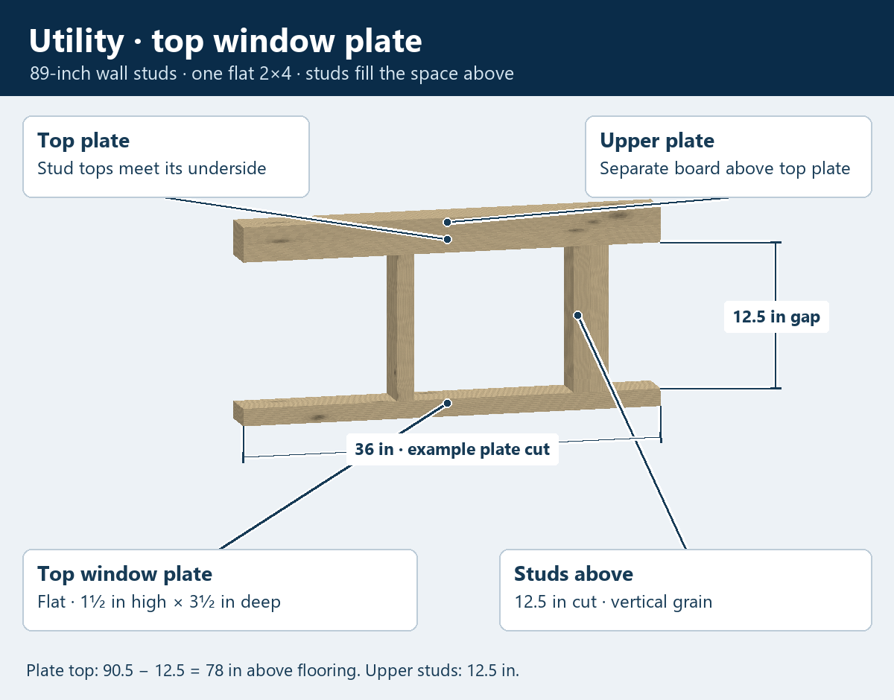
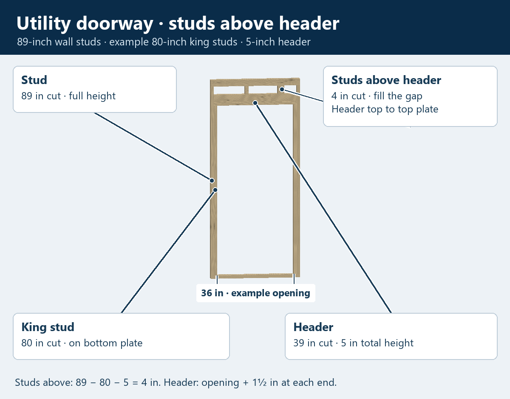

LEARNING THE UTILITY STYLE
Utility framing
Your utility wall studs cut to 89 inches. The top window plate is one flat 2×4, with studs filling the space above it. Fill space above other framed openings with studs too.
Top window plate and studs above

Rotate and change the example
Drag to turn; pinch or use + / − to zoom. The picture above works on your phone even when 3D is unavailable.
Loading the measured utility detail…
Stud cut above top window plate: 12½ in
Studs above a utility doorway

A-frame roof / utility-style roof
10-wide example: 2×4, actual 1½ × 3½ in.
Use 2×4 for 10-wide and under, and 2×6 for wider buildings (actual 1½ × 5½ inches). The truss projects 4 inches past each side wall. Its end is 2 inches high before the top slopes toward the peak. The bottom cut is level with the top of the side wall’s upper plate.
Standard 5/12: 5 inches up for every 12 inches horizontally.
For any horizontal distance, rise = horizontal run × pitch rise ÷ 12. Over a 60-inch horizontal run, 5/12 rises 25 inches and 7/12 rises 35 inches.
The diagram explains pitch. We have your stock sizes, side overhang and end height; the exact bottom-cut shape and roof joints are still being fitted. The opening previews continue the current wall layout above the openings; those exact short-stud positions remain to check.